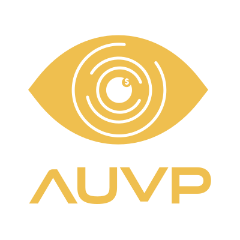

Pensou em dinheiro, pensou na AUVP.
Muito além de um treinamento: a AUVP reúne, em um só ecossistema, soluções educacionais e financeiras para acompanhar você em cada etapa da sua vida financeira.
Clique em cada solução para conhecer mais
Você aprende na prática

Nosso treinamento completo com mais de 100 aulas para ir do zero à liberdade financeira.
auvp.com.br+ conhecimento para ir além: Análise de Setores, Geopolítica, Indicadores e Aulas Técnicas.
auvp.com.br/#modulos-avancadosRenda fixa internacional, stocks, REITs e Private Equity.
auvp.com.br/#modulos-avancadosFerramentas próprias para potencializar seus estudos e facilitar a gestão da carteira.
auvp.com.br/#ferramentasEncontros ao vivo com Raul Sena, toda segunda-feira, às 19h.
comunidade.auvp.com.br/livesNós cuidamos da sua vida financeira
Conta, cartão e atendimento 100% AUVP, exclusivo para alunos.*
auvp.com.br/#cartaoComparação com mais de 20 bancos, com a melhor taxa sem liquidar seus investimentos.
auvpcapital.com.br/creditoEnvie, receba ou invista no exterior com custo transparente.
auvpcapital.com.br/cambioCotação justa com nossas seguradoras parceiras, sem viés de interesse.
auvpcapital.com.br/segurosBlindagem patrimonial, governança e planejamento sucessório.
auvpcapital.com.br/wealthAUVP11, AUPO11, AREA11 e ABTC11, com metodologias AUVP.
auvpetfs.com.br*Sujeito a análise de crédito.